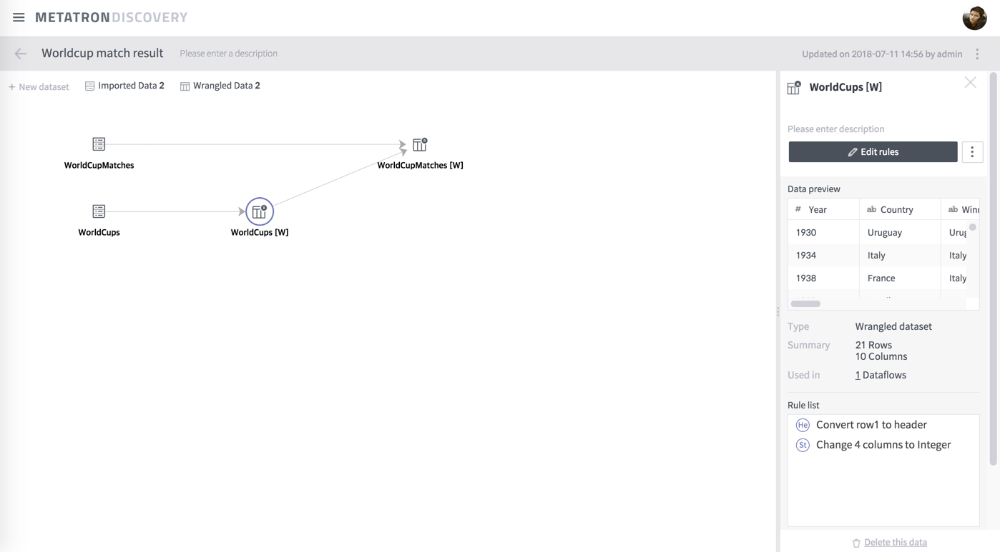
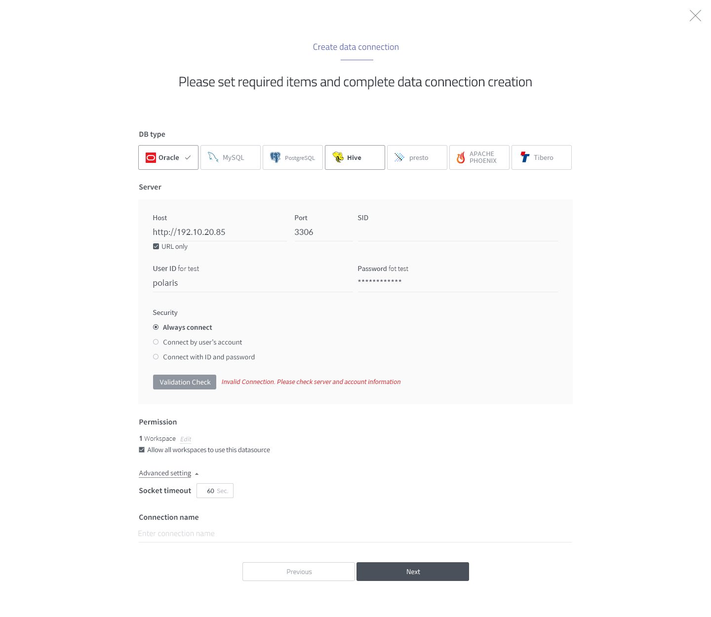
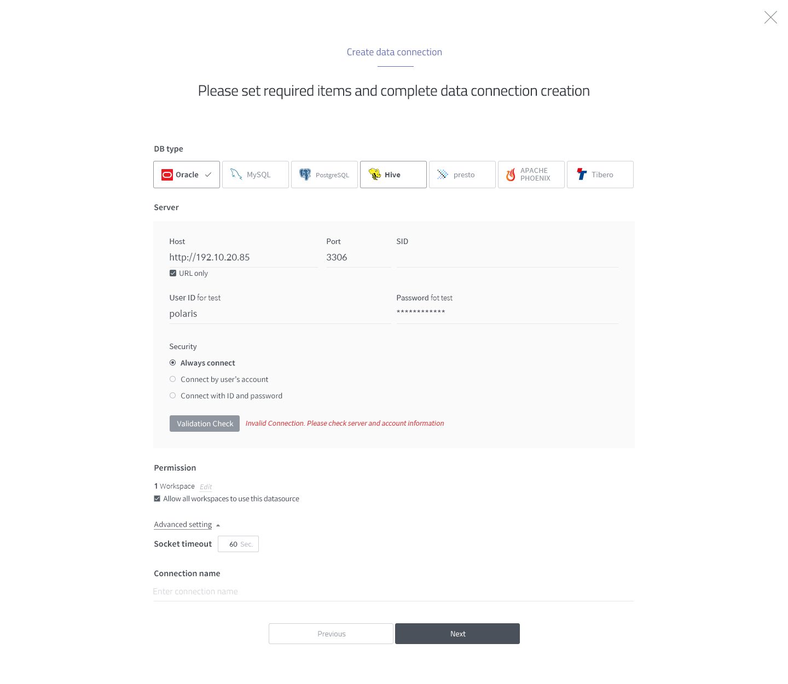

Metatron Discovery 구성¶
Metatron Discovery는 Metatron 운용 서버에 적재된 데이터 소스나 그 밖의 외부 데이터 소스로부터 원하는 데이터를 불러와서 각종 고급 분석 기능을 통해 분석한 후, 그 결과를 다양한 형식의 차트와 보고서로 출력하는 기능을 합니다. 본 모듈을 이용하려면 다음과 같은 전반적인 구조를 이해해야 합니다.

데이터 프리퍼레이션¶
데이터 프리퍼레이션은 원천 데이터에서부터 데이터를 정제 및 가공하여 Metatron으로 적재하는 기능을 제공합니다. 데이터 프리퍼레이션에 대한 자세한 설명은 데이터 프리퍼레이션 항목을 참조하십시오.

데이터 스토리지¶
데이터 스토리지는 분석·시각화를 위해 Metatron 엔진에 적재된 데이터를 관리합니다. 데이터 관리 기능에 대한 자세한 설명은 데이터 관리 항목을 참조하십시오.
 

데이터 분석 및 시각화¶
아래 각 모듈은 데이터 스토리지에 저장한 데이터를 사용자가 시각화 기반 탐색, 분석하는 기능을 제공합니다.
워크스페이스¶
워크스페이스는 조직 내에서 사용할 워크북, 워크벤치, 노트북을 권한에 따라 관리할 수 있습니다. 워크스페이스 기능에 대한 자세한 설명은 워크스페이스 항목을 참조하십시오.


데이터 모니터링¶
데이터 쿼리 통계, 쿼리 로그 감사를 통해 데이터 사용에 대한 모니터링 기능을 제공합니다. 데이터 모니터링 기능에 대한 자세한 설명은 데이터 모니터링 항목을 참조하십시오.

사용자 권한 및 계정¶
사용자를 추가, 삭제하거나 사용자의 권한을 관리합니다.